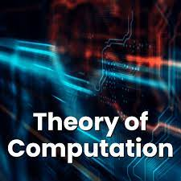

Theory of Computation and Formal Language| Basic Concepts and Automata Theory | Introduction to Theory of Computation- Automata, Computability and Complexity, Alphabet, Symbol, String, Formal Languages, Deterministic Finite Automaton (DFA)- Definition, Representation, Acceptability of a String and Language, Non Deterministic Finite Automaton (NFA), Equivalence of DFA and NFA, NFA with ε-Transition, Equivalence of NFA’s with and without ε-Transition, Finite Automata with output- Moore Machine, Mealy Machine, Equivalence of Moore and Mealy Machine, Minimization of Finite Automata, Myhill-Nerode Theorem, Simulation of DFA and NFA |
|---|---|
| Regular Expressions and Languages | Regular Expressions, Transition Graph, Kleen’s Theorem, Finite Automata and Regular Expression- Arden’s theorem, Algebraic Method Using Arden’s Theorem, Regular and Non-Regular Languages- Closure properties of Regular Languages, Pigeonhole Principle, Pumping Lemma, Application of Pumping Lemma, Decidability- Decision properties, Finite Automata and Regular Languages, Regular Languages and Computers, Simulation of Transition Graph and Regular language |
| Regular and Non-Regular Grammars | Context Free Grammar(CFG)-Definition, Derivations, Languages, Derivation Trees and Ambiguity, Regular Grammars-Right Linear and Left Linear grammars, Conversion of FA into CFG and Regular grammar into FA, Simplification of CFG, Normal Forms- Chomsky Normal Form(CNF), Greibach Normal Form (GNF), Chomsky Hierarchy, Programming problems based on the properties of CFGs. |
| Push Down Automata and Properties of Context Free Languages | Nondeterministic Pushdown Automata (NPDA)- Definition, Moves, A Language Accepted by NPDA, Deterministic Pushdown Automata(DPDA) and Deterministic Context free Languages(DCFL), Pushdown Automata for Context Free Languages, Context Free grammars for Pushdown Automata, Two stack Pushdown Automata, Pumping Lemma for CFL, Closure properties of CFL, Decision Problems of CFL, Programming problems based on the properties of CFLs. |
| Turing Machines and Recursive Function Theory | Basic Turing Machine Model, Representation of Turing Machines, Language Acceptability of Turing Machines, Techniques for Turing Machine Construction, Modifications of Turing Machine, Turing Machine as Computer of Integer Functions, Universal Turing machine, Linear Bounded Automata, Church’s Thesis, Recursive and Recursively Enumerable language, Halting Problem, Post’s Correspondance Problem, Introduction to Recursive Function Theory. |